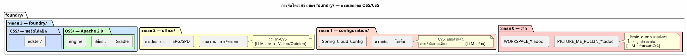

การทำให้ OSS/CSS ละเอียดเป็นส่วนย่อย — ทำไมฉันจึงแยก `foundry/` ออกเป็นสองส่วน
เผยแพร่เมื่อ 03 May 2026
foundry/— พื้นที่ฟังก์ชันที่เก็บโค้ดของเวิร์กสเปซของฉัน — มี 18 โครงการ แปดโครงการเป็นโอเพนซอร์สภายใต้ Apache 2.0 มีเพียงหนึ่งเดียวที่ ซอร์สโค้ดปิด — SaaS Edster เป็นเวลาหลายเดือน โครงการทั้งเก้าเหล่านี้อยู่ร่วมกัน ในโฟลเดอร์เดียวกัน โดยคั่นกันเพียง… ไม่มีอะไรเลย สถานะสาธารณะ/ส่วนตัวของพวกมัน เคยเป็นข้อมูลในหัวของฉัน ไม่ใช่ในระบบไฟล์
และแล้วฉันก็อยากจะเชื่อมต่อ RAG แล้วตรงนั้นเองทุกอย่างก็พังทลายลง
อุบัติเหตุที่รอจะเกิดขึ้น
ในเดือนเมษายน 2026 ฉันเริ่มพัฒนา RAG pgvector สำหรับ slider-gradle หลักการ: จัดทำดัชนีที่เก็บทั้งหมดของ`foundry/`, ผลิต embeddings และแทรกสิ่งเหล่านั้นเข้าไปในบริบทของ LLM เพื่อให้มันมีหนึ่ง การรับรู้" ของแฟ้มเอกสาร`foundry/`No source text was provided to translate. Please send the French text you’d like translated into Thai.
ไปป์ไลน์นั้นเรียบง่าย:
val repos = fileTree(rootDir) {
include("**/*.adoc", "**/*.kts", "**/*.kt", "**/*.json", "**/*.yml")
}
val chunks = repos.map { chunk(it) }
val embeddings = chunks.map { embed(it) }
pgvector.insert(embeddings)เรียบง่าย มีประสิทธิภาพ และอันตราย.
เพราะว่านี่`fileTree`ไม่แยกความแตกต่างระหว่าง`plantuml-gradle/` (Apache 2.0, สาธารณะ) และ`edster/`(ซอร์สโค้ดปิด, ส่วนตัว) มันกลืนทุกอย่าง และถ้าสักวันหนึ่งฉันเผยแพร่ embeddings เหล่านี้ — บนแดชบอร์ด ในคำตอบ LLM ในชุดข้อมูลการฝึก — โค้ดที่เป็นกรรมสิทธิ์ของ Edster รั่วไหล
|
ปัญหาไม่ใช่ว่า LLM อ่านโค้ด closed source ปัญหาคือ คือว่าโค้ดนี้ไปอยู่ในเวกเตอร์เอ็มเบดดิงแบบ*สาธารณะ* — ไม่สามารถย้อนกลับได้, ไม่สามารถลบได้, ไม่สามารถตรวจสอบได้ |
คำถามที่แท้จริง
ไม่ใช่ "จะป้องกันไม่ให้ LLM รั่วโค้ดได้อย่างไร?" นี่คือ "อย่างไร ทำให้การหลบหนีเป็นไปไม่ได้ในเชิงโครงสร้าง?
คำตอบไม่ใช่พรอมต์ คำตอบคือการตัดแฟ้มออกเป็นสองส่วน
โซลูชัน: OSS/ และ CSS/
ก่อน:
foundry/
├── plantuml-gradle/ ← public
├── bakery-gradle/ ← public
├── magic-stick/ ← public
├── edster/ ← PRIVÉ
├── slider-gradle/ ← public
└── ... ← mélange invisibleหลังจาก:
foundry/
├── OSS/ ← tout est Apache 2.0
│ ├── plantuml-gradle/
│ ├── bakery-gradle/
│ ├── magic-stick/
│ ├── slider-gradle/
│ └── ...
└── CSS/ ← tout est closed source / private
└── edster/Le `fileTree`กลายเป็น :
val ossRepos = fileTree(File(rootDir, "OSS")) {
include("**/*.adoc", "**/*.kts", "**/*.kt", "**/*.json", "**/*.yml")
}
val cssRepos = fileTree(File(rootDir, "CSS")) {
include("**/*.adoc", "**/*.kts", "**/*.kt", "**/*.json", "**/*.yml")
}
// Embeddings publics — OSS seulement
pgvectorPublic.insert(ossRepos.map { chunk(it) }.map { embed(it) })
// Dataset fine-tuning privé — CSS seulement
fineTuningDataset.insert(cssRepos.map { chunk(it) }) // jamais publié|
RAG สาธารณะไม่เคยเห็น`CSS/`. โค้ดแบบ closed source ป้อนชุดข้อมูล ปราศจาก fine-tuning — โมเดลภายในที่ไม่เคยออกจากบ้านของฉัน La การแยกเป็นกลไก ไม่ใช่การประกาศ |
ทำไมจึงใช้ "OSS" และ "CSS" ไม่ใช่ "Public" และ "Private
การเลือกใช้ตัวย่อ OSS (Open Source Software) และ CSS (Closed Source Software) เป็นการเจตนา:
-
Public"/"Private" อธิบายการมองเห็น(สิ่งที่ GitHub เห็น)
-
OSS"/"CSS" อธิบายธรรมชาติของโค้ด (สิ่งที่ LLM ต้องรู้)
การมองเห็นบน GitHub เป็นเมทาดาทาของรีโประยะไกล ลักษณะของโค้ดคือ คุณสมบัติของเนื้อหา LLM ไม่สามารถเข้าถึง API GitHub — แต่สามารถเข้าถึง ไปยังระบบไฟล์`CSS/บอกเขาว่า "ระวัง โค้ดนี้ไม่ได้อยู่ภายใต้สัญญาอนุญาต ฟรี" โดยไม่ต้องอ่านหนึ่ง`LICENSE`หรือเพื่อแยกวิเคราะห์`package.json.
|
ชื่อโฟลเดอร์เป็นเมทาดาทาที่แข็งแกร่งที่สุดที่คุณสามารถให้กับ LLM หนึ่งตัว ไม่สามารถถูกพาร์สอย่างผิดพลาด ถูกเพิกเฉย หรือถูกตีความผิดได้ LLM เห็น`CSS/edster/`ในพาธของไฟล์ — เขารู้ |
ต้นไม้ที่สมบูรณ์ — สี่โซน ไม่ใช่สาม
การแกรนูลาไรเซชัน OSS/CSS ช่วยเติมเต็มออนโทโลยีสามโซน โซน `foundry/`เปลี่ยนจาก 1 เป็น 2 พื้นที่ย่อยเชิงหน้าที่:

| โซน | RGPD | การจัดทำดัชนี RAG สาธารณะ | ชุดข้อมูลสำหรับการปรับแต่งละเอียด | | ราก | ระดับ 0 — ส่วนตัว | ✗ | ✗ | No text was provided to translate. Please send the French text you’d like translated into Thai.configuration/`ระดับ 1 — จำกัด | ✗ | ✗ | No text was provided to translate.`office/`ระดับ 2 — แบบร่วมมือ | ✓ กรองแล้ว | ✓ กรองแล้ว | No text was provided to translate.`foundry/private/`ระดับ 3 — เปิดแบบมีเงื่อนไข | ✗ | ✓ ส่วนตัว | Please provide the French text you’d like me to translate.`foundry/public/| ระดับ 4 — ผู้ชมที่เป็นเจ้าของภาษา | ✓ เปิดเสรี | ✓ สาธารณะ |
กรณีเฉพาะ: cheroliv.com
ในขณะที่ฉันอยู่ที่นั่น ฉันได้แก้ไขความไม่สอดคล้องอีกจุดหนึ่ง เว็บไซต์ของฉัน cheroliv.com`อาศัยอยู่ใน`foundry/`เหมือนโครงการซอฟต์แวร์ อย่างเต็มตัว — ด้วย build Gradle ของตัวเอง, CI ของตัวเอง, ของตัวเอง ธรรมาภิบาล.agents/`.
แต่บทความบล็อกไม่ใช่โค้ด สิ่งเหล่านี้เป็นข้อมูล ด้านบรรณาธิการ ของ Cercle 2 — เช่นเดียวกับการจัดกรอบภาพของ`office/pilotage/` หรือหลักสูตรการฝึกอบรมของ`office/formations/`.
AVANT APRÈS
foundry/ office/
cheroliv.com/ sites/
site/jbake/content/blog/ cheroliv.com/
2026/0117_....adoc 2026/0117_....adocสิ่งที่เปลี่ยนแปลง:
-
บทความอยู่ใน`office/`ความเป็นส่วนตัวของ Cercle 2
-
ภารกิจ`publishSite`กลายเป็นความสามารถของ`engine`
ผ่าน`bakery-gradle`— ปลั๊กอินได้รับ`FileTree`, เขาไม่รู้ ว่าบทความมาจาก`office/`
-
CI เดียว การกำกับดูแลเดียว — ไม่มีความซ้ำซ้อน
-
ตัวจำแนกประเภท Vision/Opinion (กฎ 2bis) จะถูกนำมาใช้โดยอัตโนมัติ:
บทความใน`office/`จะถูกกรองก่อนเผยแพร่
bakery-gradle ไม่แคร์
และนั่นแหละคือสิ่งที่สวยงาม ปลั๊กอิน`bakery-gradle`ไม่ได้รับการแก้ไข มันรับไดเรกทอรีเนื้อหา AsciiDoc มันสร้าง HTML มัน push บน GitHub Pages ที่ไดเรกทอรีนี้มีชื่อว่า`site/jbake/content/` ou office/sites/cheroliv/— ปลั๊กอินไม่สนใจเลย
// engine/build.gradle.kts
task("publishBlog") {
doLast {
val articles = fileTree("../../office/sites/cheroliv/2026/")
bakery.generate(articles) // ← bakery ne sait pas d'où ça vient
}
}สัญญาอินเทอร์เฟซเป็นทาสก์ Gradle ไม่ใช่ REST API ไม่ใช่เว็บฮุก งานหนึ่ง — มีชนิดข้อมูล ทดสอบได้ และรันได้ทั้งในเครื่องและใน CI
ผลกระทบต่อการกำกับดูแลเอเจนต์
การแยกย่อย OSS/CSS เปลี่ยนแปลงการกำกับดูแลของเอเจนต์ในสามประเด็น:
-
RAG สาธารณะ : ขอบเขตการจัดทำดัชนีเปลี่ยนจาก`foundry/**`
à foundry/public/`Please provide the French text you’d like me to translate into Thai.`office/Vision/. โค้ดแบบ closed source ถูกตัดออกจากดัชนีโดยการกำหนดค่าของงาน ไม่ใช่โดยพรอมต์
-
Knowledge Graph : graphify-gradle สร้างกราฟสองกราฟ:
The text to translate is missing — please provide the French source text.office/graph.json(สาธารณะ) — ความสัมพันธ์ระหว่างอาร์ติแฟกต์ OSS + office/Vision *configuration/graph_private.json(ถูก git ignore, ส่วนตัว) — ความสัมพันธ์ระหว่าง อาร์ติแฟกต์ CSS ที่ไม่เคยเผยแพร่
-
การฟินจูนชุดข้อมูล :`codebase-gradle`มีแหล่งที่มาสองแหล่งแล้ว:
*OSS/→ ชุดข้อมูลสาธารณะ (โมเดลชุมชน, เบนช์มาร์ก) *CSS/→ ชุดข้อมูลส่วนตัว (โมเดลภายใน, การไฟน์ทูนแบบเป็นกรรมสิทธิ์)
สิ่งที่เราได้มา (และสิ่งที่เราเสียไป)
ก่อน (โฟลเดอร์แบบแบน) |
หลังจาก (OSS/CSS + ออฟฟิศ/ไซต์) |
`ls foundry/`การผสมผสานระหว่างภาครัฐและภาคเอกชน |
`ls foundry/public/`ทุกสิ่งสามารถเผยแพร่ได้ |
RAG จัดทำดัชนีทุกอย่างโดยไม่แบ่งแยก |
RAG จัดทำดัชนี`OSS/`No source text was provided to translate. Please send the French text you’d like translated into Thai.`office/Vision`เท่านั้น |
ไม่สามารถทราบได้ว่าโปรเจกต์เป็นโอเพนซอร์สหรือไม่ |
เส้นทาง`OSS/` ou `CSS/`ที่กล่าวถึง |
cheroliv.com มี CI ของตัวเอง มีการกำกับดูแลของตัวเอง |
CI และการกำกับดูแลถูกใช้ร่วมกันใน engine |
บทความบล็อกอยู่ในที่เก็บ "code |
บทความบล็อกอยู่ใน`office/sites/`— ข้อมูล ไม่ใช่โค้ด |
ความเสี่ยงของการรั่วไหลของโค้ด closed source ใน embeddings สาธารณะ |
เป็นไปไม่ได้ในเชิงโครงสร้าง —`CSS/`RAG นอกขอบเขต |
ค่าใช้จ่ายเดียว:`git mv`ทั่วโลกบนคลัง OSS 17 แห่ง + การรีแฟกเตอร์ของ build.gradle.kts de engine. นี่คือการโยกย้ายแบบเย็น — ไม่มีข้อมูลระหว่างการส่ง ไม่มีผู้ใช้ได้รับผลกระทบ
บทสรุป: สัญญาณทางกายภาพเอาชนะสัญญาณซอฟต์แวร์
สิ่งที่ฉันทำเมื่อบ่ายนี้คือการแทนที่ธรรมเนียมปฏิบัติที่มองไม่เห็น โดยการแยกที่มองเห็นได้ในพื้นที่`foundry/. ก่อนหน้านี้ คุณต้อง รู้ ว่า`edster/`เคยเป็น closed source ตอนนี้คุณ*เห็น*มันแล้ว — โฟลเดอร์ชื่อ`CSS/.
เป็นหลักการเดียวกันกับสิทธิ์การเข้าถึงของ Unix, VLAN เครือข่าย หรือ… คอมพาร์ตเมนต์ไฟร์วอลล์ในฐานข้อมูล ความปลอดภัยต้องไม่ เป็นข้อมูลที่คุณต้องจดจำ มันต้องเป็นคุณสมบัติ กายภาพของระบบ
การทำให้ OSS/CSS เป็นหน่วยย่อยคือการถ่ายทอดหลักการนี้ในโดเมน ของการกำกับดูแล LLM LLM ไม่จำเป็นต้องรู้ว่า Edster เป็น เป็นความลับ มันจำเป็นต้องไม่สามารถจัดทำดัชนีมันได้
และนั่นคือสิ่งที่`CSS/`รับประกัน